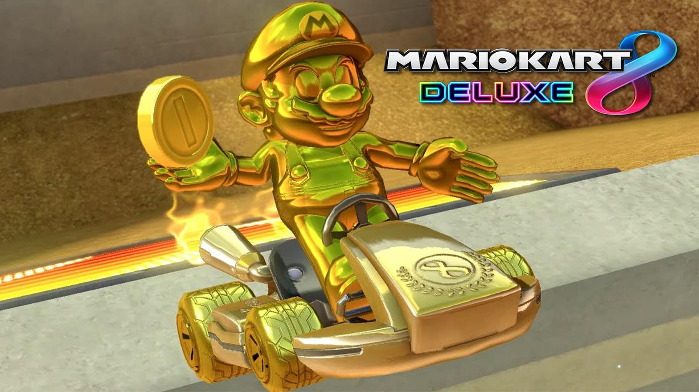
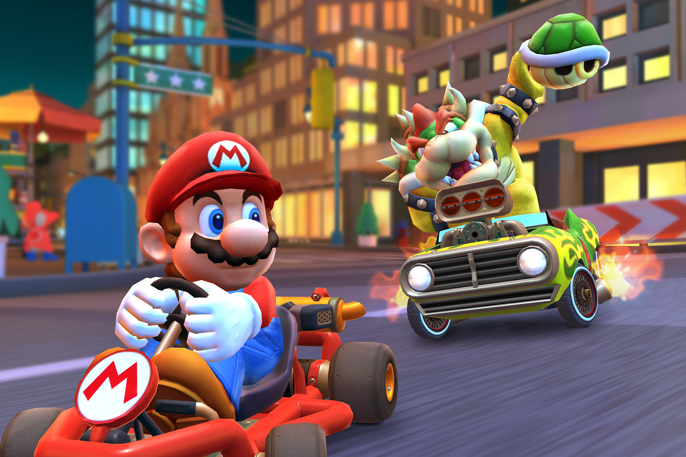

Más Información
Mario Kart 8 Deluxe es un videojuego de carreras desarrollado y publicado por Nintendo para la consola Nintendo Switch. Es la undécima entrega de la serie Mario Kart, novena en consolas de Nintendo, lanzado mundialmente el 28 de abril de 2017.
Cuenta con todo lo visto previamente en Mario Kart 8 (pistas, personajes, DLCs, vehículos, etc.). Aunque no incluye nuevas pistas de carreras, incluye nuevos personajes y un mejorado modo batalla. Este es el juego de Nintendo Switch más vendido!
Nuevos Personajes!
 Todavía no estás seguro? Mira la opinión de otros compradores:
@USUARIO: Me encanta este juego. Solía jugar mario kart en wii, pero desde que obtuve nintendo y jugué esto, nunca más me toque la wii, jajaja, pero algo que me encanta de este juego es que hay muchos personajes y opciones. Vale la pena jugarlo. también juega con amigos: 3 este juego me encanta, no tiene nada de malo para mí, así que sí, eso no es todo. Otra cosa que es buena de este juego es que SE PUEDE JUGAR SIN CONEXIÓN. MHM, ME ESCUCHARON. COMPRÓ O JUGÓ ESTE JUEGO, SE PIERDE MUCHAS COSAS, así que consígalo, por favor, es increíble, no puedo decirles más lo bueno que es.
@USUARIO2: ME ENCANTA ABSOLUTAMENTE ESTE JUEGO NO PUEDO DEJAR DE JUGARLO!!!!!!! Mi personaje favorito tiene que ser, ...bueno, no tengo un favorito. Todos son bastante geniales. El estilo de arte es impresionante. Es como el estilo artístico de Mario + Rabbids Kingdom Battle. Los cursos y campos de batalla son realmente elegantes. Porque son nuevos atajos creados como Mt.Wario o Dolphin Shores y el resto del juego es genial. Incluso los modos de batalla